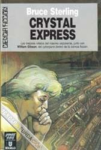

Dias verdes en Brunei
Días verdes en Brunei (Escrito por Bruce Sterling y publicado por primera vez en la revista de ciencia ficción Isaac Asimov en octubre de 1985) relata una historia ciberpunk muy romántica, en contraposición a la colección de distopías que resulta ser Mirrorshades. En un lugar de oriente (Brunei), que quedó desconectado del rápido y tecnológico mundo occidental tras terminarse su reserva de petróleo (una ZTA idealizada), un ingeniero americano tiene el encargo de hacer funcionar los robots de una fábrica de barcos. Su estancia en un lugar tan tranquilo y al mismo tiempo tan curioso le hace cambiar, por una parte su lucha por acceder a la documentación necesaria para programar esos robots (hackeando el sistema de comunicaciones de brunei) por otra parte el encuentro con personalidades influyentes y su amor con la mismísima princesa de Brunei le hacen ver con otros ojos tanto ese lugar como su propia historia como las posibilidades que ofrece un mundo por descubrir. En otras palabras, es un corto y precioso relato sobre la curiosidad inagotable y apasionada de un hacker cualquiera en un lugar cualquiera.
